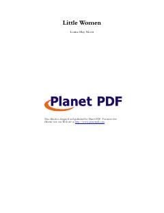

KXTo'rt opa-singilning urush davridagi hayoti va orzulari haqida klassik roman.
Bu kitob Louisa May Alcottning mashhur 'Little Women' asarining o'zbek tilidagi tarjimasi bo'lib, March oilasining to'rt qizi — Meg, Jo, Beth va Emining hayotini tasvirlaydi. Urush davrida otasiz qolgan qizlar kambag'allik va qiyinchiliklarga qaramay, do'stlik, sevgi va umid bilan yashaydilar. Asar o'sish, burch va xarakter shakllanishi mavzularini chuqur yoritadi.